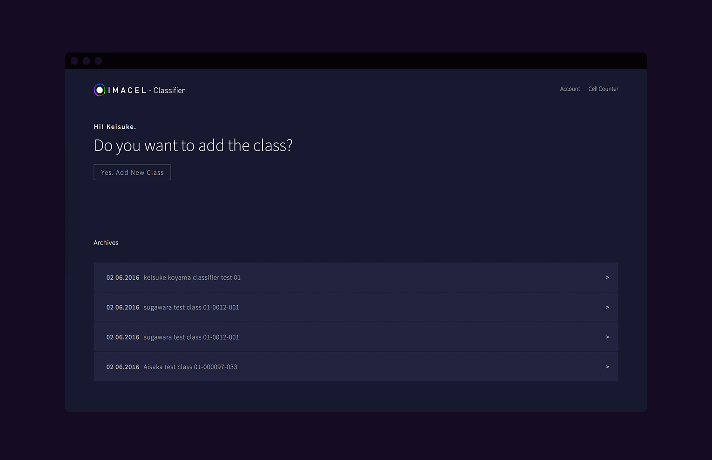
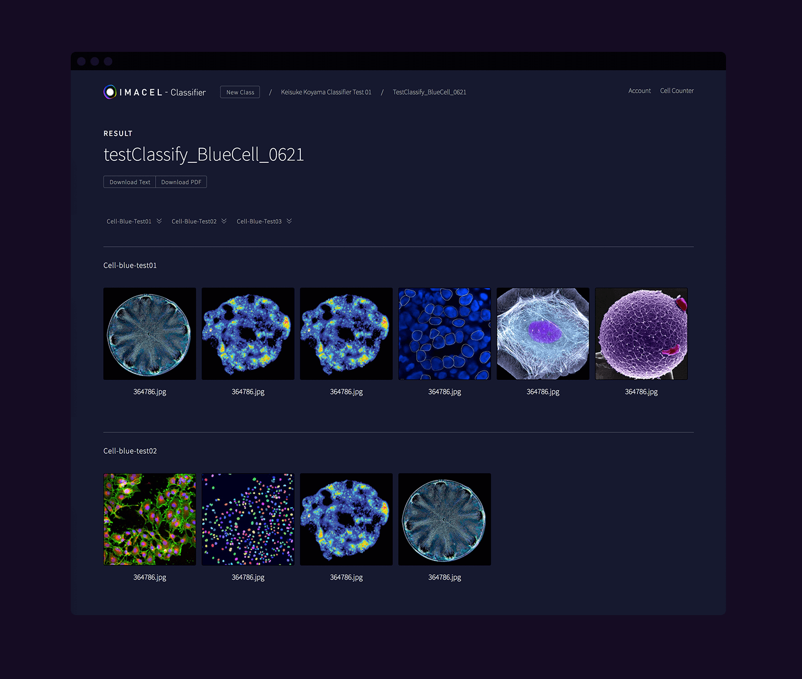
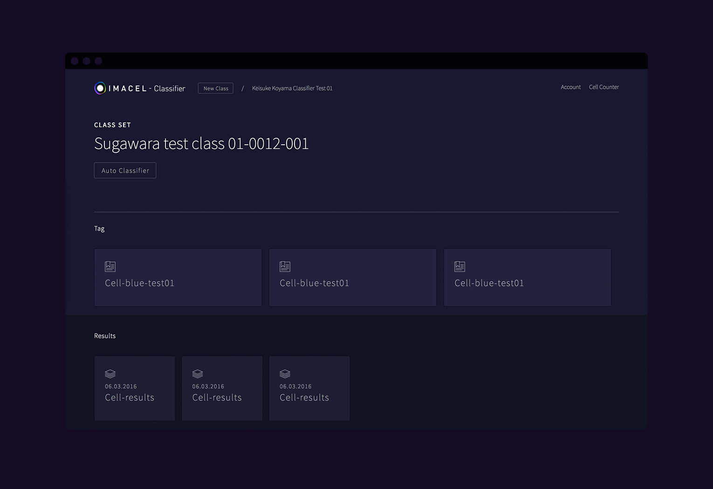
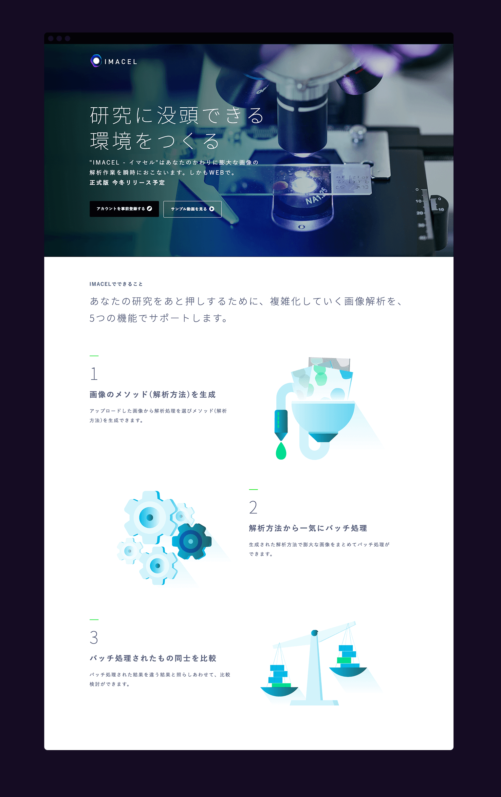
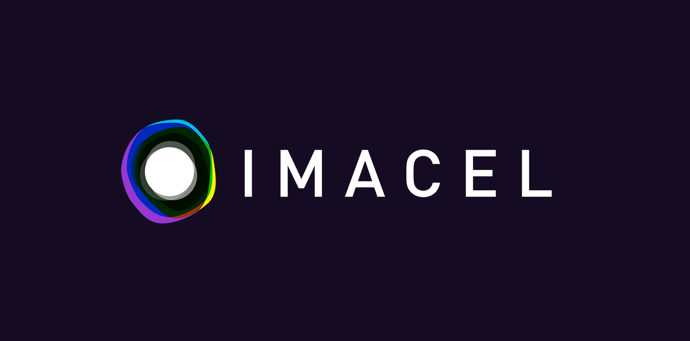

IMACEL
2016
IA & UI Design & Coding & Writing & Illusration
2016
IA & UI Design & Coding & Writing & Illusration
同じ理想をさがす
人工知能を活用した研究者向けの画像解析のWEBアプリとティザーサイトの情報設計、UIデザイン、ロゴ、コピーライティング、コーディングを担当。
ライフサイエンス界隈では、研究過程でかならず行う画像解析が技術の発達により複雑化し膨大な労力を必要としています。本来は研究そのものに時間をさかなければならいないのですが、それが難しい状況に陥っています。その現状に歯止めをかけるため、ソフトウェア開発会社のエルピクセルが人工知能を用いた自動画像解析WEBサービスを立ち上げました。研究過程でうまれた実験画像をアップロードし、解析パターンをプロダクト側が読み解き自動処理を行うサービスです。

トップ画面

詳細画面

カテゴリー画面
UIデザインで重要なポイントは2点あります。１つは自動解析の概念が業界には浸透していないため言葉による表現と導線を大事にしたこと。2つめは作業ミスを起こさせないために非言語要素(アイコン)の使用をCVでは極力減らしたこと。アイコンは文字情報を減らすことでコミュニケーションフローを圧縮する働きがありますが、厳密な作業を要求される環境ではアイコンの認識に個人差があり悪影響を及ぼす可能性があります。非言語要素はデータの種類を判別できる程度に留め、重要な決定を行うUIには非言語要素は使わないようにしました。
全体のトーンは、顕微鏡から取得した画像が映えるようにかなり暗めに設定し、視認性を担保しています。また顕微鏡を覗いたときの世界観とUIの世界観を同じにすることでシームレスな体験を目指しています。

ディザーサイト
ティザーサイトでは、まだα版ということもありサービスのuIデザインは見せることができなかったため、イラストレーションでその世界観を伝える方針に注力しました。研究者目線ということで、直接研究者にレビューをしていただき訴求できるコピーワークを作りだしました。

ロゴ
『科学を加速させる』と掲げているキャッチコピーがこの会社にはあり、その信条のもとプロダクトを世に送り出すことで、研究者を助け科学の進歩に貢献できるように働きかけています。そのため社内の研究者やスタッフ、利用するユーザーも含め、科学に貢献するプロダクトが生み出す『加速』には大きな期待をよせています。その加速を体現し、フラッグシップとなるこののプロダクトが次の概念を示すことでより強い求心力になると考え、『加速』に焦点をあてたロゴを制作しました。
研究者は日夜研究に没頭し様々な失敗や経験を重ね、課題を理想に近づけていきます。このサービスの中核である人工知能もまた何万ものライフサイエンスのデータを取り込み学習し経験を積んで精度を高めていきます。それら積み重ねで新しい概念や次元に到達できるということ、そしてその可能性をこのプロダクトは秘めているということをロゴに落とし込みました。次元が変わるような『加速』を提供するサービスとして、モチーフは『ワームホール』としています。すこし大げさなコンセプトを立ち上げたのは、ユーザーにそれだけ期待してほしいこととそれに自分たちが応えるためハードルをあげるねらいがあります